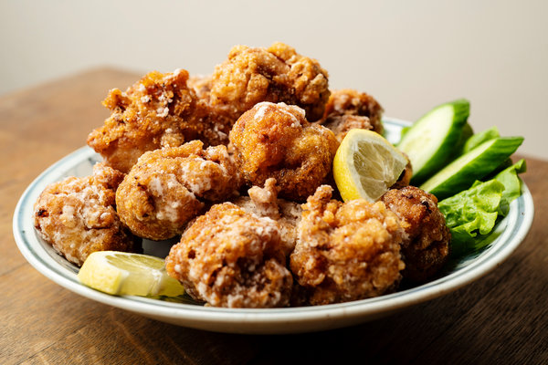

Karaage

Description
Karaage is a common sight in Japan. They're similar to chicken nuggets, but has a touch of Japanese style cooking to it.
Don't confuse karaage with karaoke
Ingredients
- 1 clove garlic, finely grated
- 1 tbsp finely grated fresh ginger
- 3 tablespoons soy sauce
- 3 tablespoons sake
- 1 tablespoon mirin
- 1/8 teaspoon sesame oil
- 1/4 teaspoon ground black pepper
- 1 pinch cayenne pepper
- 1/2 teaspoon white sugar
- 1/4 teaspoon kosher salt
- 1 1/4 pounds boneless, skinless chicken thighs, cut into 2-inch pieces
- 1 cup potato starch
- 1 quart canola oil, or as needed
Steps
- Mix garlic, ginger, soy sayce, sake, mirin, sesame oil, black pepper, cayenne, sugar, and salt in a medium
bowl.
- Place chicken in the marinade and mix until thoroughly and evenly coated. Cover and refrigerate for 1 to 10
hours.
- Set up your derdging statin: Place a wire rack over a foil-lined baking sheet. Add potato starch to a wide,
shallow bowl.
- Remove chicken from the refrigerator. Stir to coat with maeinade. Toss 2 or 3 pieces at a time in the potato
starch until evenly coated. Shake off any excess starch and place chicken on the wire rack. Repeat to dredge
remaining pieces.
- Tap the rack on the baking sheet to remove any loose chunks of starch, then transfer the baking sheet and
rack of chicken to the refrigerator for 15 to 30 minutes.
- Heat oil in a deep fryer to 350 degrees farenheit (175 degrees Celcius).
- Without crowsing, lower chicken carefully into the hot oil in batches. Fry, tossing occasionally until
cooked through and the outside is crunchy and browned, 3 to 4 minutes. Transfer to a paper towel-lined plate
to drain. Repeat with remaining chicken.